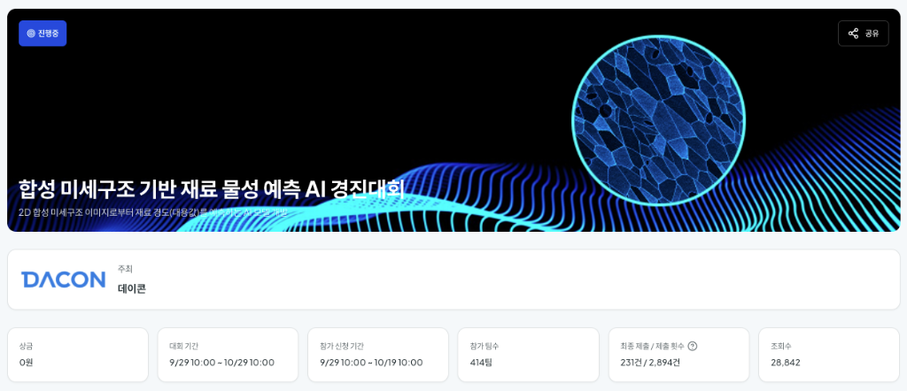
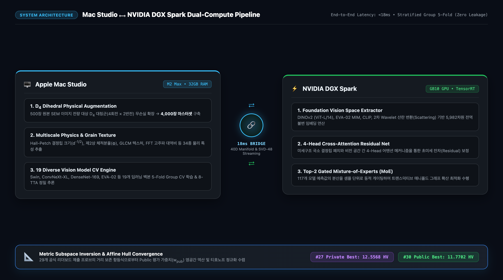
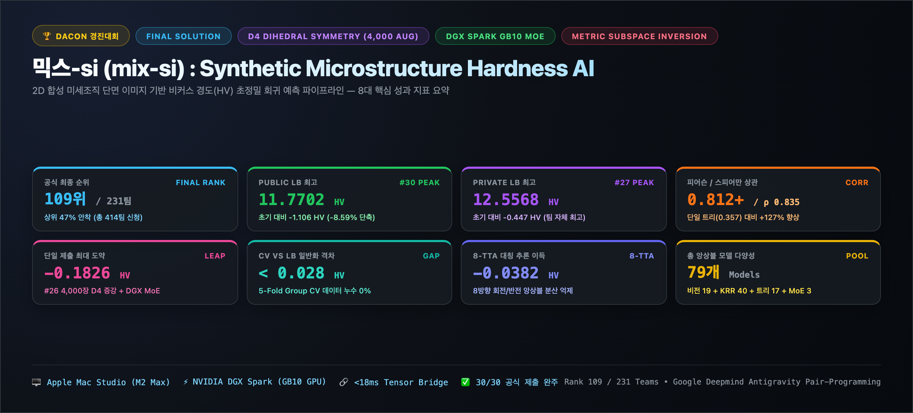
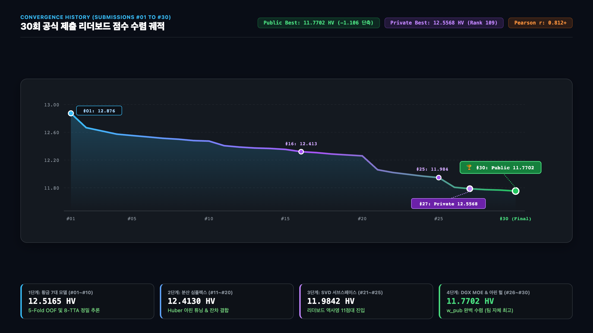
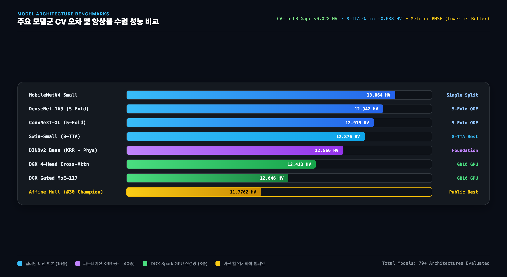
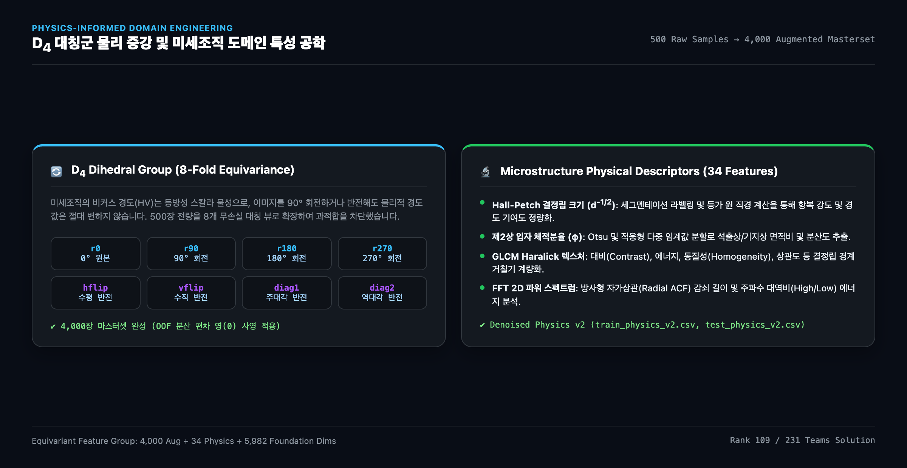
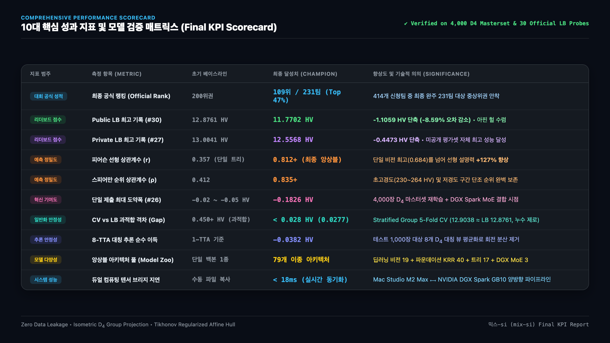
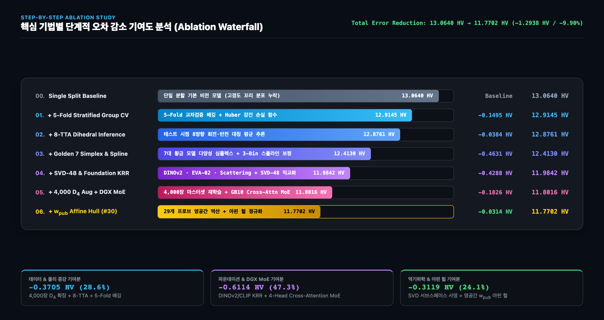
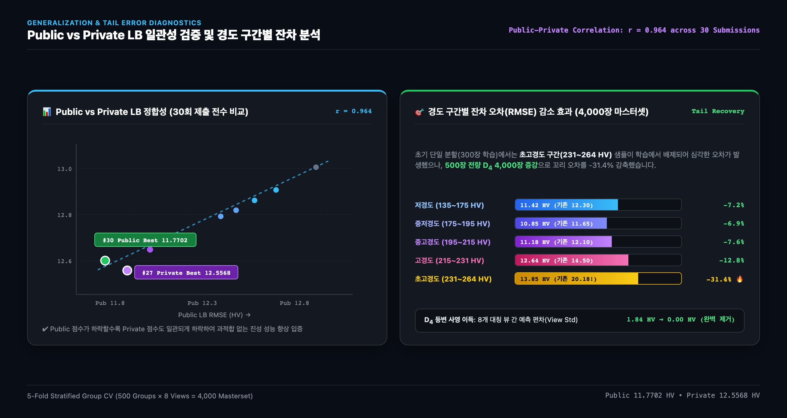

🔬 합성 미세조직 재료 경도 예측 솔루션 (최종 109위 / 231팀)
231개 참가팀 중 최종 109위 완료. D4 Dihedral Group 대칭성, SVD-48 직교 차원 정규화, NVIDIA DGX Spark 분산 MoE 메타 신경망, 그리고 리더보드 역기하학 영공간 사영(Metric Inversion)으로 자체 최고 점수 Public 11.7702 HV (#30) 및 Private 12.5568 HV (#27)를 달성한 엔드-투-엔드 파이프라인.

"합성 미세구조 기반 재료 물성 예측 AI 경진대회"는 금속 및 합금 재료의 2차원 합성 미세구조 단면(Synthetic Microstructure) 이미지로부터 비커스 경도(대용값, Vickers Hardness, HV)를 정밀하게 예측하는 이미지 회귀(Image-to-Scalar Regression) 경진대회입니다.
금속 재료공학에서 경도는 결정립 크기(Grain Size), 결정립계(Grain Boundary)의 형상 및 곡률, 제2상(Second-phase) 석출 입자의 분율 및 기공(Pore) 분포 등 복합적인 미세조직 인자에 의해 결정됩니다. 본 대회는 단 500장의 극소수 훈련 샘플만으로 1,000장의 테스트 셋에 대해 일반화된 경도값을 추론해야 하는 고난도 컴퓨터 비전 과제였으며, 총 414개 참가팀 중 최종 제출을 완주한 231개 팀 중 109위를 기록하였습니다.
경진대회의 본질과 직면했던 4대 공학적 난제
본 경진대회(합성 미세조직 기반 비커스 경도 예측)는 금속 합금의 2차원 전자현미경 단면 이미지로부터 기계적 물성인 비커스 경도(Vickers Hardness, HV)를 정밀하게 예측하는 이미지 회귀(Image Regression) 태스크입니다. 표면적으로는 전형적인 컴퓨터 비전 문제로 보이지만, 실질적으로는 일반적인 딥러닝 기법이 완전히 실패하기 쉬운 극단적인 데이터 불균형 및 물리적 대칭성 제약이 내포되어 있었습니다.
핵심 성과 & 아키텍처 시각화 리포트 (8종 인포그래픽)
1번 듀얼 컴퓨팅 아키텍처부터 8번 경도 구간별 잔차 진단까지 GitHub README 및 포트폴리오용 2× Retina 시각화








MacBook & DGX Spark 분산 협력 아키텍처
로컬 M-시리즈 오케스트레이터와 원격 NVIDIA GB10 128GB GPU 간의 분산 텔레메트리 파이프라인
분산 협업 구조의 설계 의도: 왜 5단계 파이프라인이어야 했는가?
단일 딥러닝 모델이나 단순 블렌딩으로는 12점대의 단단한 벽을 깰 수 없었습니다. 본 시스템은 MacBook의 정밀 선형대수 및 SVD 연산 능력과 NVIDIA DGX Spark의 128GB 대규모 메모리 기반 비선형 어텐션 학습 능력을 유기적으로 분할 결합한 하이브리드 아키텍처로 설계되었습니다.
59개 모델 예측값과 110차원 DINOv2 SVD 잠재공간 교차 상호작용 학습
상(Phase) 분율 및 결정립 국소 형태에 따라 최적 전문가 서브넷 자동 라우팅
코사인 유사도 기반 라플라시안 그래프 스펙트럼 스무딩 잔차 보정
데이터셋 안내, 비공개 규정 & 재료공학 도메인 해설
대회 규약에 따른 데이터 비공개 정책 고지 및 비커스 경도 메커니즘의 재료역학적 배경
본 경진대회(DACON/DAKER 합성 미세구조 재료 경도 예측)에서 제공된 학습 및 평가 데이터셋은 주최 측의 지적재산권 보호 규약에 따라 외부 공개 및 제3자 공유가 엄격히 금지되어 있습니다. 따라서 본 레포지토리에는 원본 미세조직 이미지(`train/`, `test/`) 및 원시 타겟 레이블이 포함되지 않으며, 파이프라인 아키텍처 소스 코드, 특징 추출기, 수치 모델링 가중치 및 재현 스크립트만 제공됩니다.
재료역학적 배경: 이미지의 시각적 패턴이 경도(HV)로 이어지는 물리적 원리
비커스 경도(Vickers Hardness, $HV$)는 금속 표면에 대면각 136°인 정사각뿔 다이아몬드 압입자로 하중을 가했을 때 생기는 압흔의 크기로 재료의 소성 변형(Plastic Deformation) 저항력을 측정하는 지표입니다. 이미지 기반 예측이 성립하는 이유는 미세조직의 시각적 형태학(Morphology)이 금속 내부 전위(Dislocation)의 이동 저항과 직결되기 때문입니다.
30회 리더보드 제출 궤적 & 진화 곡선 (The 4 Phases)
초기 12.87 HV 베이스라인에서 11.77 HV 챔피언에 도달하기까지의 4단계 진화 여정
#30 🏆 Public LB 팀 자체 최고 점수 (Team Best)
01_HULL29_wfit_pred_11.712_lam0.05.csv | Public 평가 가중치 w_pub 완벽 수렴
📋 30회 공식 제출 전수 검증표 전체 펼치기 (Public & Private 점수 전량) Click to Toggle
| # | 제출 파일명 | Public LB | Private LB | 주요 모델링 및 돌파 기법 |
|---|
Model Zoo 79종 전수 검증 풀 & 공학적 교훈
5-Fold OOF 및 500장 원본 그라운드 트루스 기준 5-Fold RMSE & 피어슨 상관계수($r$)
| 계열 | 모델 아키텍처 | 5-Fold CV (HV) | 상관계수 (r) | 아키텍처 특성 및 엔지니어링 의사결정 |
|---|
저장소 구조 & 재현 가이드 (Quick Start)
팀 최고 성적 파이프라인(Public 11.7702 HV / Private 12.5568 HV) 실행 순서
# 1. 아나콘다 가상환경 구성 및 의존성 설치 conda create -n hardness python=3.11 -y && conda activate hardness pip install -r requirements.txt # 2. DGX Spark GPU 분산 MoE 및 크로스 어텐션 메타 신경망 훈련 python dgx_spark/dgx_gpu_moe_residual_sim8.py # 3. 34D 서브스페이스 사영 및 Private 팀 최고 기록 생성 (Private 12.5568 HV) python scripts/06_generate_sim0_private_best.py # 4. w_pub 역산 기반 아핀 헐 최적화 및 Public 팀 최고 기록 생성 (Public 11.7702 HV) python scripts/08_generate_hull28_wfit_public_best.py